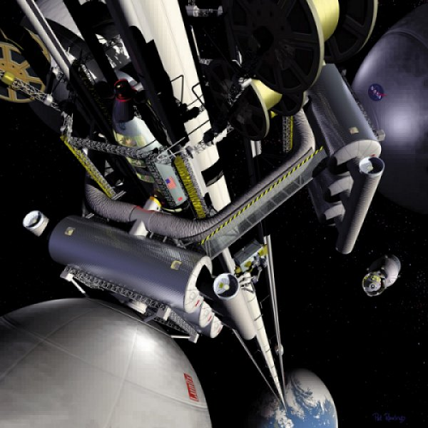
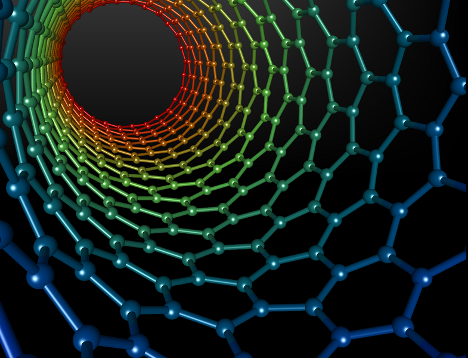
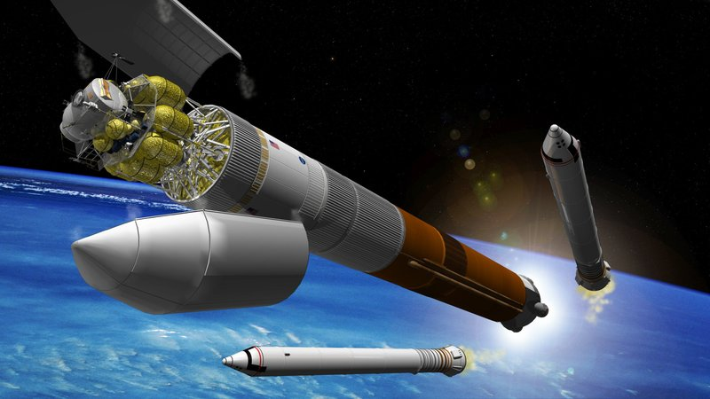
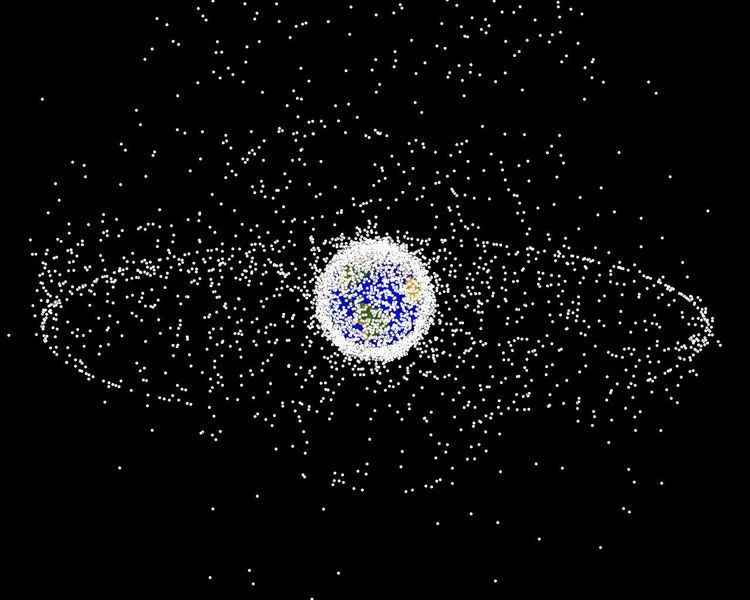

A NASA depiction of the space elevator. A space elevator will make it hundreds of times cheaper to put a pound into space. It is an efficiency difference comparable to that between the horse and the locomotive.
One of the best ways to cheaply get back into space is kicking around NASA's research labs:
Scale picture of the space elevator relative to the size of Earth. The moon is 30 Earth-diameters away, but once you are at GEO, it requires relatively little energy to get to the moon, or anywhere else.
A space elevator is a 65,000-mile tether upon which we can launch things into space in a slow, safe, and cheap way.
And these climbers don't even need to carry their energy as you can use solar panels to provide the energy for the climbers. All this means you need much less fuel. Everything is fully reusable, so when you have built such a system, it is easy to have daily launches.
The first elevator's climbers will travel into space at just a few hundred miles per hour — a very safe speed. Building a device which can survive the acceleration and jostling is a large part of the expense of putting things into space today. This technology will make it hundreds, and eventually thousands of times cheaper to put things, and eventually people, into space.
A space elevator might sound like science fiction, but like many of the ideas of science fiction, it is a fantasy that makes economic sense. While you needn't trust my opinion on whether a space elevator is feasible, NASA has never officially weighed in on the topic — they haven't given it enough serious consideration.
This all may sound like science fiction, but compared to the technology of the 1960s, when mankind first embarked on a trip to the moon, a space elevator is simple for our modern world to build. In fact, if you took a cellphone back to the Apollo scientists, they'd treat it like a supercomputer and have teams of engineers huddled over it 24 hours a day. With only the addition of the computing technology of one cellphone, we might have shaved a year off the date of the first moon landing.

Nanotubes are Carbon atoms in the shape of a hexagon. Graphic created by Michael Ströck.
We have every technological capability necessary to build a space elevator with one exception: carbon nanotubes (CNT). To adapt a line from Thomas Edison, a space elevator is 1% inspiration, and 99% perspiration.
Carbon nanotubes are extremely strong and light, with a theoretical strength of three million kilograms per square centimeter; a bundle the size of a few hairs can lift a car. The theoretical strength of nanotubes is far greater than what we would need for our space elevator; current baseline designs specify a paper-thin, 3-foot-wide ribbon. These seemingly flimsy dimensions would be strong enough to support their own weight, and the 10-ton climbers using the elevator.
The nanotubes we need for our space elevator are the perfect place to start the nanotechnology revolution because, unlike biological nanotechnology research, which uses hundreds of different atoms in extremely complicated structures, nanotubes have a trivial design.
The best way to attack a big problem like nanotechnology is to first attack a small part of it, like carbon nanotubes. A “Manhattan Project” on general nanotechnology does not make sense because it is too unfocused a problem, but such an effort might make sense for nanotubes. Or, it might simply require the existing industrial expertise of a company like Intel. Intel is already experimenting with nanotubes inside computer chips because metal loses the ability to conduct electricity at very small diameters. But no one has asked them if they could build mile-long ropes.
The US government has increased investments in nanotechnology recently, but we aren't seeing many results. From space elevator expert Brad Edwards:
There’s what’s called the National Nanotechnology Initiative. When I looked into it, the budget was a billion dollars. But when you look closer at it, it is split up between a dozen agencies, and within each agency it's split again into a dozen different areas, much of it ends up as $100,000 grants. We looked into it with regards to carbon nanotube composites, and it appeared that about thirty million dollars was going into high-strength materials — and a lot of that was being spent internally in a lot of the agencies; in the end there’s only a couple of million dollars out of the billion-dollar budget going into something that would be useful to us. The money doesn’t have focus, and it’s spread out to include everything. You get a little bit of effort in a thousand different places. A lot of the budget is spent on one entity trying to play catch-up with whoever is leading. Instead of funding the leader, they’re funding someone else internally to catch up.Again, here is a problem similar to the one we find in software today: people playing catchup rather than working together. I don't know what nanotechnology scientists do every day, but it sounds like they would do well to follow in the footsteps of our free software pioneers and start cooperating.
The widespread production of nanotubes could be the start of a nanotechnology revolution. And the space elevator, the killer app of nanotubes, will enable the colonization of space.

Lunar Lander at the top of a rocket. Rockets are expensive and impose significant design constraints on space-faring cargo.
NASA has 18,000 employees and a $17-billion-dollar budget. Even with a fraction of those resources, their ability to oversee the design, handle mission control, and work with many partners is more than equal to this task.
If NASA doesn't build the space elevator, someone else might, and it would change almost everything about how NASA does things today. NASA's tiny (15-foot-wide) new Orion spacecraft, which was built to return us to the moon, was designed to fit atop a rocket and return the astronauts to Earth with a 25,000-mph thud, just like in the Apollo days. Without the constraints a rocket imposes, NASA's spaceship to get us back to the moon would have a very different design. NASA would need to throw away a lot of the R&D they are now doing if a space elevator were built.
Another reason the space elevator makes sense is that it would get the various scientists at NASA to work together on a big, shared goal. NASA has recently sent robots to Mars to dig two-inch holes in the dirt. That type of experience is similar to the skills necessary to build the robotic climbers that would climb the elevator, putting those scientists to use on a greater purpose.
Space debris is a looming hazard, and a threat to the ribbon:

Map of space debris. The US Strategic Command monitors 10,000 large objects to prevent them from being misinterpreted as a hostile missile. China blew up a satellite in January, 2007 which created 35,000 pieces of debris larger than 1 centimeter.
The space elevator provides both a motive, and a means to launch things into space to remove the debris. (The first elevator will need to be designed with an ability to move around to avoid debris!)
Once you have built your first space elevator, the cost of building the second one drops dramatically. A space elevator will eventually make it $10 per pound to put something into space. This will open many doors for scientists and engineers around the globe: bigger and better observatories, a spaceport at GEO, and so forth.
Surprisingly, one of the biggest incentives for space exploration is likely to be tourism. From Hawaii to Africa to Las Vegas, the primary revenue in many exotic places is tourism. We will go to the stars because man is driven to explore and see new things.
Space is an extremely harsh place, which is why it is such a miracle that there is life on Earth to begin with. The moon is too small to have an atmosphere, but we can terraform Mars to create one, and make it safe from radiation and pleasant to visit. This will also teach us a lot about climate change, and in fact, until we have terraformed Mars, I am going to assume the global warming alarmists don't really know what they are talking about yet.2 One of the lessons in engineering is that you don't know how something works until you've done it once.
Terraforming Mars may sound like a silly idea today, but it is simply another engineering task.3 I worked in several different groups at Microsoft, and even though the set of algorithms surrounding databases are completely different from those for text engines, they are all engineering problems and the approach is the same: break a problem down and analyze each piece. (One of the interesting lessons I learned at Microsoft was the difference between real life and standardized tests. In a standardized test, if a question looks hard, you should skip it and move on so as not to waste precious time. At Microsoft, we would skip past the easy problems and focus our time on the hard ones.)
Engineering teaches you that there are an infinite number of ways to attack a problem, each with various trade-offs; it might take 1,000 years to terraform Mars if we were to send one ton of material, but only 20 years if we could send 1,000 tons of material. Whatever we finally end up doing, the first humans to visit Mars will be happy that we turned it green for them. This is another way our generation can make its mark.
A space elevator is a doable mega-project, but there is no progress beyond a few books and conferences because the very small number of people on this planet who are capable of initiating this project are not aware of the feasibility of the technology.
Brad Edwards, one of the world's experts on the space elevator, has a PhD and a decade of experience designing satellites at Los Alamos National Labs, and yet he has told me that he is unable to get into the doors of leadership at NASA, or the Gates Foundation, etc. Setting aside the nanotechnology, we might need only 5,000 man-years of work to accomplish this task, but no one who has the authority to organize this understands that a space elevator is doable.
Glenn Reynolds has blogged about the space elevator on his very influential Instapundit.com, yet a national dialog about this topic has not yet happened, and NASA is just marching ahead with its expensive, dim ideas. My book is an additional plea: one more time, and with feeling!
There are a many interesting details surrounding a space elevator, and for those interested in further details, I recommend The Space Elevator, co-authored by Brad Edwards.
The size of the first elevator is one of biggest questions to resolve. If you were going to lay fiber optic cables across the Atlantic ocean, you'd set aside a ton of bandwidth capacity. Likewise, the most important metric for our first space elevator is its size.
The one other limitation with current designs is that they assume climbers which travel hundreds of miles per hour. This is a fine speed for cargo, but it means that it will take days to get into orbit. If we want to send humans into space in an elevator, we need to build climbers which can travel at 10,000 miles per hour. While this seems ridiculously fast, if you accelerate to this speed over a period of minutes, it will not be jarring. Perhaps this should be the challenge for version two if they can't get it done the first time.
The conventional wisdom amongst those who think it is even possible is that it will take between 20 and 50 years to build a space elevator. However, anyone who makes such predictions doesn't understand that engineering is a fungible commodity. Two people will, in general, accomplish something twice as fast as one person.4 How can you say something will unequivocally take a certain amount of time when you don't specify how many resources it will require or how many people you plan to assign to the task?
Furthermore, predictions are usually way off. If you asked someone how long it would take unpaid volunteers to make Wikipedia as big as the Encyclopedia Britannica, no one would have guessed the correct answer of two and a half years. From creating a space elevator to world domination by Linux, anything can happen in far less time than we think is possible if everyone simply steps up to play their part. The way to be a part of the future is to invent it, by unleashing our scientific and creative energy towards big, shared goals. Wikipedia, as our encyclopedia, was an inspiration to millions of people, and so the resources have come piling in. The way to get help is to create a vision that inspires people.
In a period of 75 years, man went from using horses and wagons to landing on the moon. Why should it take 30 years to build something that is 99% doable today?
Many of the components of a space elevator are simple enough that college kids are building prototype elevators in their free time. The Elevator:2010 contest is sponsored by NASA, but while these contests have generated excitement and interest in the press, they are building toys, much like a radio-controlled airplane is a toy compared to a Boeing airliner.
I believe we could have a space elevator built in 7 years. If you divvy up three to four years of work per person, and add in some time to ramp up and test, you can see how seven years is quite reasonable. Man landed on the moon 7 years after Kennedy's speech, exactly as he ordained, because dates can be self-fulfilling prophecies. It allows everyone to measure themselves against their goals, and determine if they need additional resources.
If the design of the hardware and the software were done in a public fashion, others could take the intermediate efforts and test them and improve them, therefore saving further engineering time. Perhaps NASA could come up with hundreds of truly useful research projects for college kids to help out on instead of encouraging them to build toys.
The Unknown Unknown is the nanotubes, but nearly all the other pieces can be built without having any access to them. We will only need them wound into a big spool on the launch date.
I can imagine that any effort like this would get caught up in a tremendous amount of international political wrangling that could easily add years on to the project. We should not let this happen, and we should remind each other that the space elevator is just the railroad car to space — the exciting stuff is the cargo inside and the possibilities out there. A space elevator is not a zero sum endeavor: it would enable lots of other big projects that are totally unfeasible currently. A space elevator would enable various international space agencies that have money, but no great purpose, to work together on a large, shared goal. And as a side effect it would strengthen international relations.5